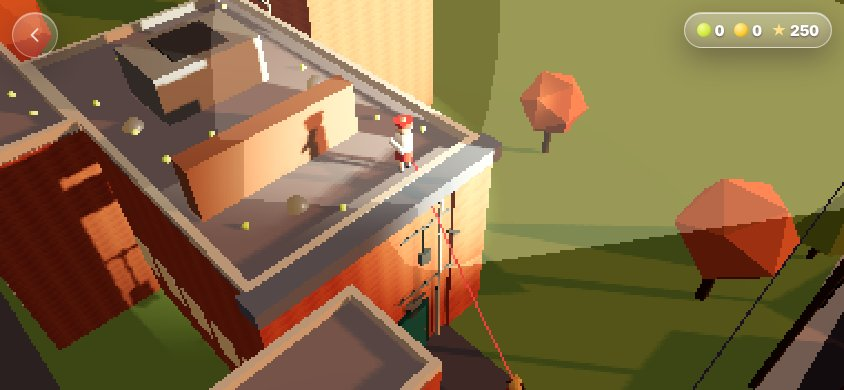
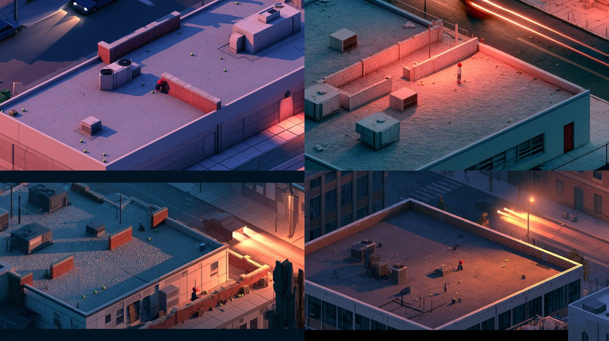
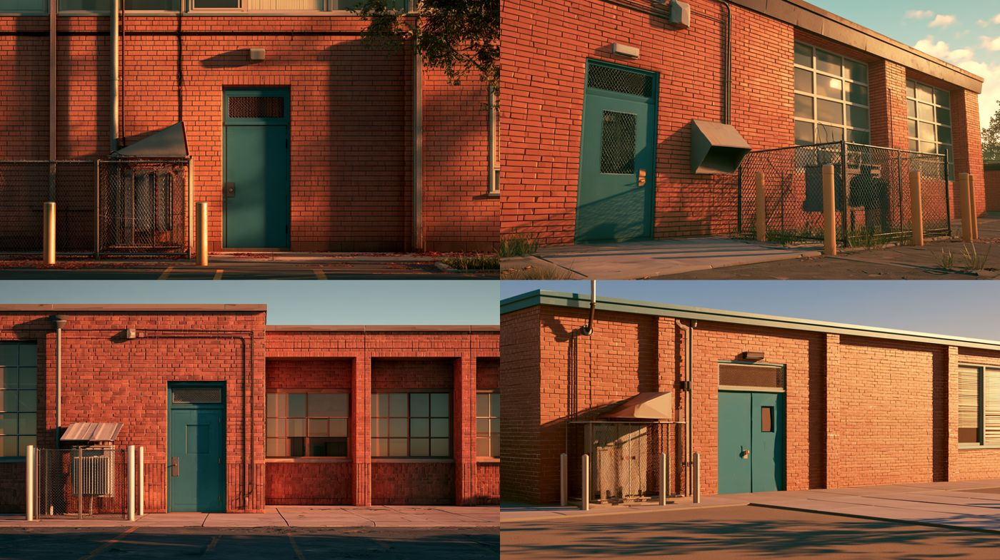
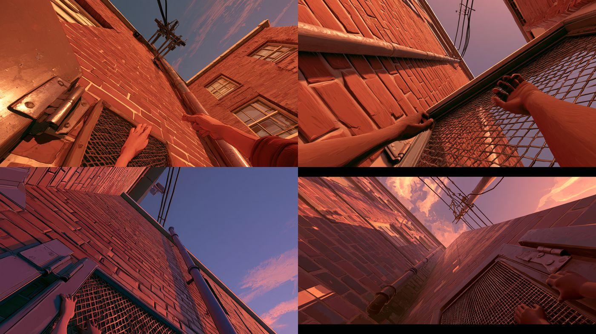
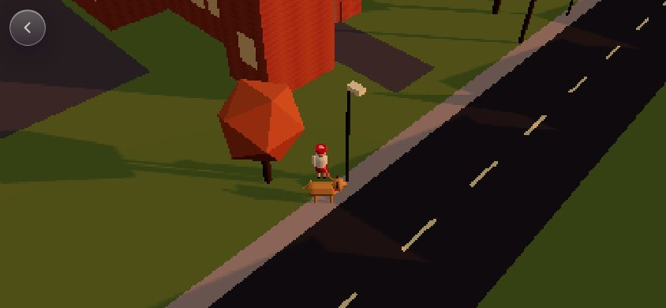
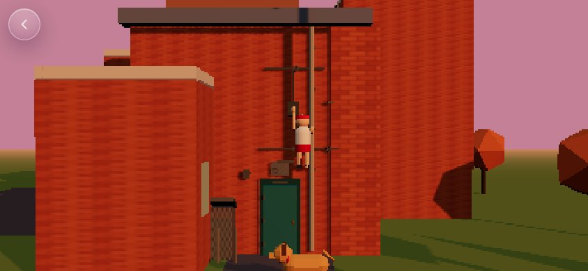
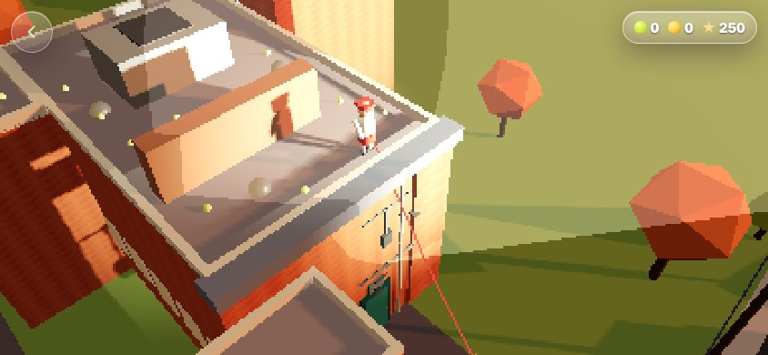

AW-STUDY-0026
The School Jump
A memory of climbing the old school at dusk, told in a few minutes on the night of 2026-10-23 and built as a game. It is a super-stylized version: no real names, no photos of the real building, and the gas pipe became a drainpipe.

The art target
Round two follows Evan's picture: a painterly golden dusk, seen side-on. A kid in a red cap, white tee and red shorts climbs the brick by the drainpipe, a shaggy golden dog waits below, and a station wagon's headlights come down the street. The Midjourney proofs below explore that look for the asset pass. Every job id and pick is kept in tools/midjourney/outputs/school-jump-concepts/provenance.json.





How it plays



- Walking bub. You start on the sidewalk with your dog on the leash. Tap the wall to throw the tennis ball at it. Bub fetches it and barks. "Oh, you want it further, do ya bub?" You throw harder. The third throw sails onto the roof.
- The climb. Seen side-on, and cartoonishly far: door hinges, the knob, the frame, the mesh grate, then drainpipe brackets, conduit clamps and the phone box up a tall wall. Click a hold to latch a hand on, click it again to let go. Hands can't cross over, and you can't let go of your last hand in mid-air. Hanging on one hand tires you, two hands rest you, and wrong grabs cost you. Run out and you slide down while your little inner voice cheers you on.
- Over the top. You pull yourself onto the roof and the camera rises into the iso view without a cut.
- The roof. Tap to walk; walk over a ball to scoop it up. You can carry three, then tap bub to throw them down. Every ball scores, and a clean climb, the drop, the coin and the ending score more. The score sits in one small glass chip.
- The cars. Slow station wagons come down the street diagonally, top right to bottom left, one every sixteen seconds. Each one throws a long beam of light all the way up to the roof. Only two big barriers stand between you and the street, and their shadows are the only safe places.
- Getting caught. You feel it in the lights. The headlights burn hotter, a high whine rises, your heartbeat pounds, the camera pushes in and time slows. The kid throws up an arm against the glare. Stay in the light and a grown-up shouts you off the roof, and you're back at the bottom of the wall.
- The gym and the hang-drop. Climb the gym wall, then hang off its edge. The one overlay, a small glass timing bar, shows only while you hang. Let go in the gold zone to drop onto the entrance canopy, where the last balls and the gold coin wait.
- The gold coin. The coins are Daddy's core memories. It lifts out of the world toward you, turns in a burst of light and sparkles to a chiming fanfare, and is kept. It counts with Grace's basement coins.
- The Hollywood ending. Climb the small wall back to the main roof, then go home the same way: conduit, grate, door, past the hydro cage under its sheet-metal hood. You land with feet on the grass and the dog at your side. The alternate ending is still to come.
How it shows information
- Diegetic: headlights sweep the roof on a steady rhythm, engines rise before a car arrives, the dog's pile grows, the lamp rattles when it's loose.
- Meta: tired arms are breathing, sway and trembling hands; being seen is burning glare, a rising whine, a heartbeat, a push-in and slow motion; the coin reward is a feeling, not a label.
- Spatial: the glow on reachable holds, the score pops over balls you deliver, and the ring at your feet when a car is looking.
- Overlay: the hang-drop timing bar and one small score chip of icons and numbers. Zero words on screen; the voice speaks.